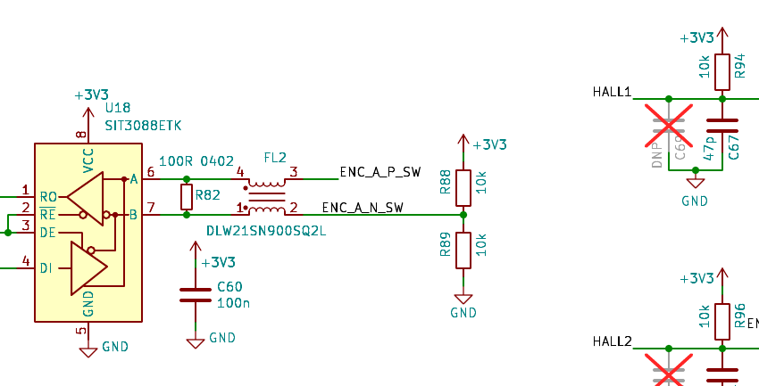
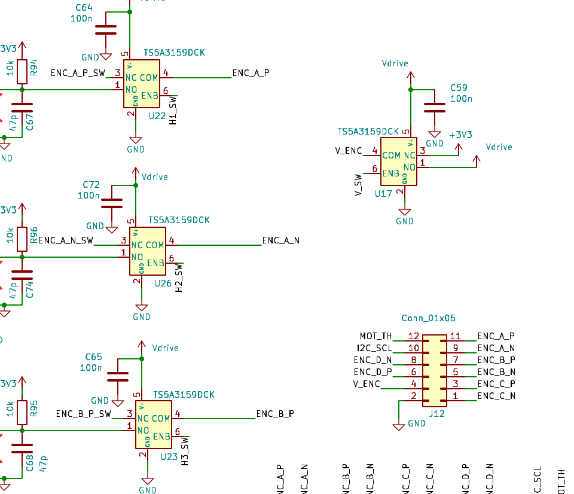
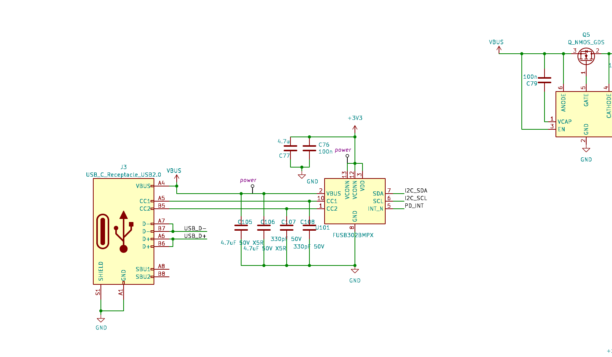
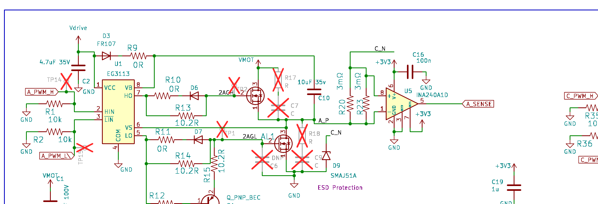

Schematic Review
Focus: encoder port single-ended / differential support · full schematic + firmware pass · 2026-08-08
1 · Executive summary
This is a genuinely impressive board — inline INA240 phase current sensing, a software-reconfigurable 12-pin encoder port with differential transceivers, USB-PD input through an ideal diode, isolated CAN, and careful adherence to the RP2350 minimal design guide. The encoder port concept (analog switches that re-route physical pins between transceivers, hall filters, ADC, and I2C) is sound. One specific component — the always-connected 100 Ω differential termination — is what breaks single-ended mode, and it is fixable three different ways, including one that works on boards you already have.
| # | Severity | Finding | Where |
|---|---|---|---|
| 1 | HIGH | Single-ended encoder signals can't cross the receiver threshold: the 100 Ω termination (R82–R85) shorts the driven line to the undriven line, and the 10k/10k bias can only develop ±32 mV of differential — the SIT3088 needs to see below −100 mV to switch. Fixes in §2.4. | Encoder port |
| 2 | HIGH | Phase-output TVS diodes D9/D13/D17/D21 are SMAJ51A (51 V standoff, breakdown from 56.7 V). Any bus above ~51 V parks them in leakage/breakdown whenever a high-side FET is on. The "60 V max" claim is not compatible with these parts. §3.1. | Power stage |
| 3 | MED | Every TS5A3159 control line (V_SW, H1–H3_SW, I2C_SW, EXT_ANALOG_SW, TH_SW) and every SIT3088 DE/RE̅ line floats until firmware boots — switch states and driver enables are undefined at power-up. V_SW floating can momentarily put 5 V on a 3.3 V encoder; a floating DE can fight the encoder breakout's always-on driver. Add 100k pull-downs. §2.5. | Encoder port |
| 4 | MED | Bus TVS D5 is SMDJ85A (85 V standoff, clamps ~137 V) — it cannot protect 80 V FETs. Protection margins are inverted: the TVS tolerates more than the FETs do. §3.1. | Power stage |
| 5 | MED | E-stop is a plain GPIO input — a crashed CPU can't be stopped, and DEMO_MODE self-spins the motor at power-up. WS2812B data (3.3 V) is below spec VIH (3.5 V) at its 5 V supply. §3.3. | Safety / misc |
| 6 | LOW | Documentation drift: schematic shunts are 2×8 mΩ (±20.6 A range) but the built board has 20 mΩ (±4.1 A, hence the firmware's 4 A clamp); board silk A/C phase labels are swapped vs schematic (handled in firmware); README's 60 V / 20 A headline doesn't match the current build. §3.2. | Docs |
2 · Encoder port deep-dive
2.1 · How the port works today
J12 is a 12-pin Molex connector. The odd row carries four differential pairs (A–D); the even row carries GND, switchable encoder power, channel-D pair, I2C SCL, and a motor-thermistor line. Channels A–C pass through TS5A3159 SPDT analog switches that select between the differential-transceiver path and a single-ended path (hall filters on A+/A−/B+, SDA on B−, ADC on C+/C−). Channel D is hardwired to its transceiver.
| Pin | Net | Alternate role (via switch) | Pin | Net | Alternate role (via switch) |
|---|---|---|---|---|---|
| 1 | ENC_C_N | ADC5 (GPIO45), shared with C-phase V sense | 2 | GND | — |
| 3 | ENC_C_P | ADC4 (GPIO44), shared with B-phase V sense | 4 | V_ENC | 3.3 V (default) or 5 V via U17 |
| 5 | ENC_B_N | I2C SDA via U27 | 6 | ENC_D_P | — (transceiver only) |
| 7 | ENC_B_P | HALL3 → GPIO33 | 8 | ENC_D_N | — (transceiver only) |
| 9 | ENC_A_N | HALL2 → GPIO32 | 10 | I2C_SCL | hardwired; shared with FUSB302 |
| 11 | ENC_A_P | HALL1 → GPIO31 | 12 | MOT_TH | ADC7 via U15, shared with FET NTC |

2.2 · Why differential works
A differential driver (the encoder breakout's CA-IF4820HD, or any RS-422 line driver) actively drives both lines and is designed to develop ≥1.5 V across a 54 Ω load. The 100 Ω termination is its intended load, and the 5 kΩ Thevenin bias on the B line is invisible next to it. The receiver sees ±1.5 V — more than 10× its threshold. Everything works.
Your encoder breakout is also terminated correctly for this: 100 Ω at each receiving end (R82 on the controller for the data channel; R83/R84 on the breakout for CS/SCK). The controller's own R83–R85 on its transmitting channels make those pairs double-terminated (50 Ω load) — within RS-485 drive spec, so fine.
2.3 · Why single-ended fails — the numbers
A single-ended encoder drives only the P pin; the N pin is left floating at the connector. But N is not floating at the receiver — R82 ties it to the driven line through just 100 Ω, while the bias divider tries to hold it at 1.65 V through a 5 kΩ Thevenin resistance. The 100 Ω leg wins, 50:1.
2.4 · How to support both — three options
Option A (recommended for next rev): switch the termination
Put each 100 Ω termination behind one more TS5A3159 (same part you already use ten of), all four controlled by one GPIO. GPIO38 is free and already routed to test point TP20 — it exists on fabricated boards, which also makes a bodge feasible on the current rev.
- BOM: +4× TS5A3159 (SC-70-6, already in your JLC BOM) or 2× TS5A23159 (dual). Wire NO→R82, COM→A-line (or the reverse), ENB bussed to GPIO38. Default open = single-ended-safe.
- Also add: 10 k pull-up to 3V3 on each P_SW line (and on ENC_D_P for channel D). Without it, open-collector encoders — most cheap optical quads and hall-based ABZ sensors — have nothing to pull the line high. In differential mode 10 k is invisible; in analog/hall modes the switch disconnects it (channel D has no analog mode, so a resistor on the connector net is fine there).
- Current-rev bodge: R82–R85 are 0402s at the transceivers. Lift one end, dead-bug a SOT-23 switch or just leave lifted for single-ended-only use. TP20/GPIO38 gives you the control line without touching the CPU fanout.
Option B (zero new parts, resistor swap only): stiffen the bias
Keep the termination permanently connected but change R86–R93 from 10 k to 560 Ω (Thevenin 280 Ω @ 1.65 V). The divider then wins enough of the fight with the 100 Ω coupling:
| Bias resistors (each) | ΔV at VA=3.3 V | ΔV at VA=0 V | Verdict vs −200…−100 mV threshold |
|---|---|---|---|
| 10 kΩ (today) | +32 mV | −32 mV | never crosses — broken |
| 560 Ω | +434 mV | −434 mV | works, ~2–4× margin |
| 470 Ω | +493 mV | −493 mV | works, slightly better |
Trade-offs: ~3 mA static per channel; margins are workmanlike rather than generous; the stiff divider slightly loads differential drivers (still within RS-485 spec, which assumes exactly this kind of fail-safe biasing); and open-collector single-ended encoders remain marginal — with the termination still in circuit, even a 2.2 k pull-up on P only develops ≈+60 mV of high-state differential. Option B is for push-pull single-ended outputs. This is, however, the easiest field fix for boards already built: eight 0402 swaps.
Option C (works today, firmware only): use the hall path for single-ended quadrature
Single-ended A/B/Z at 3.3 V or 5 V open-collector can go in on pins 11/9/7 right now: flip H1–H3_SW and read GPIO31–33, which already have 10 k pull-ups, 47 pF filters, and RP2350 PIO quadrature decode available. Limits: three lines only (no channel D), so no single-ended SPI, and the transceiver path is unused. Good escape hatch; not the general answer.
2.5 · Other encoder-port findings
- MED Floating control lines at boot. None of the
TS5A3159
ENBpins nor the SIT3088DE/RE̅pins have pull resistors; between power-up and firmware init (and during SWD reflash / RUN-button reset) every mux state and driver enable is undefined. Two concrete hazards: U17 can select 5 V ontoV_ENCwith a 3.3 V-only encoder attached, and a floatingDEcan enable a controller-side driver against the encoder breakout's always-transmitting data channel (driver contention — current-limited, but sustained). Add 100 k pull-downs on all switch/enable control nets (pull-down = 3.3 V encoder power, receive mode, hall/transceiver default of your choice). - LOW I2C_SCL is hardwired to pin 10 and shared with the FUSB302 PD controller. A non-I2C encoder whose cable drives pin 10 will corrupt PD negotiation; encoder cable noise couples into the PD bus even when unused. SDA already goes through switch U27 — SCL is the asymmetric one. Consider a second half of a TS5A23159 for it in the next rev, or document "pin 10 must float in non-I2C modes".
- LOW Channel D asymmetry — bias divider sits on the connector side of the choke (A–C have it behind the switch) and D has no hall/analog alternate. Fine electrically; just worth documenting so users know single-ended SPI needs the transceiver-path fix.
- OK Speed budget: SIT3088 is 14 Mbps, the DLW21SN900SQ2L choke and TS5A3159 are fine at SSI/SPI rates; the known "2 bytes early, 1 bit right" MT6701 shift is consistent with ~4 transceiver propagation delays in the clock→data round trip and is already compensated in firmware. Consider documenting a max SPI clock (~2–4 MHz round-trip-limited).
- OK Encoder breakout (MT6701 + 3× CA-IF4820HD) is correctly terminated at receiving ends only, always-on data driver, CS/SCK receivers, thermistor on pin 12. Clean.

3 · Rest-of-board findings
3.1 · Protection vs the "60 V" rating HIGH
- Phase TVS (D9/D13/D17/D21, SMAJ51A): standoff 51 V, breakdown 56.7–62.7 V. Phase outputs sit at full bus voltage every high-side on-time. Above ~51 V bus these parts leak and heat; at 60 V they are at/inside breakdown with a high-side FET on — they will fail (likely short, taking the phase with them). Even a 12S pack (50.4 V full) leaves zero margin. Fix: SMAJ58A at minimum for 48 V systems, SMAJ70A-class for true 60 V operation — or delete them and rely on the FET body diodes + bus TVS, which is common on drives.
- Bus TVS (D5, SMDJ85A): standoff 85 V, clamping ~137 V at rated pulse current — but the FETs are 80 V (BSC030N08NS5 per the JLC cart; if you've moved to the 100 V TMG08N10SI also in the cart, this improves). As-is the TVS cannot act before the FETs avalanche. For a 60 V board you need 100 V FETs and a TVS that stands off >60 V but clamps <100 V (e.g. SMDJ70A, clamps ~113 V — still tight; two SMCJ33A in series, or accept FET avalanche rating as the real clamp). For a 48 V board the existing FETs are fine and D5 should drop to ~SMDJ58A.
- Related: regen events are real on this board — the boot/reset default (below) brakes the motor, and XL7005A's 80 V absolute max is also in the spike path. Decide the honest bus rating (48 V nominal is defensible today; 60 V needs the part changes above) and align README + TVS + FETs to it.
3.2 · Power stage & sensing
- OK Gate drive: EG3113 half-bridge drivers, bootstrap DSS110 + 4.7 Ω, 10.2 Ω gate resistors, 10 k pulls on every input giving a defined boot state: HIN low (high-side off), LIN̄ low → low-side ON. All four low sides on at reset = brake + bootstrap precharge. Reasonable choice, but verify it's intentional: a reset at speed hard-brakes the motor and regens into the bus (see TVS finding). EG3113 has no shoot-through protection — firmware dead-time is load-bearing (SimpleFOC 6-PWM dead zone covers this).
- LOW Shunt discrepancy: schematic says 2×8 mΩ
per phase (4 mΩ → 0.08 V/A → ±20.6 A, neatly filling the INA240A1's output range — good
design point); the built board has 20 mΩ (±4.1 A, hence firmware's
CURRENT_LIMIT_MAX_Aclamp). Nothing wrong electrically, but README's "20 A" and the schematic values describe a board that isn't the one on the bench. Suggest a variants table (shunt ↔ range ↔ firmwareSHUNT_RESISTOR) in the README; the firmware comment block already has the right numbers. - OK Sense chains: INA240 (−4…80 V CM) inline on the phase outputs is the right architecture; REF at mid-rail for bidirectional current ✓. Phase/bus voltage dividers 100 k/5.1 k (0.1%) → 3.3 V at 68 V ✓ headroom even for 60 V. VMOT on ADC6, thermistors muxed on ADC7 ✓.
- LOW Phase naming swap: bridge A's output exits on the
connector net named
C_Nand vice versa; firmware documents and compensates ("board A = schematic C"). Consider renaming nets/silk next rev so schematic, silk, and firmware agree — this is the kind of quirk that bites a year from now. - OK Power tree: VMOT → XL7005A (80 V buck) → 5 V "Vdrive" → SPX3819 → 3.3 V. USB VBUS (PD-negotiable via FUSB302) feeds VMOT through an LM74700 ideal diode — nice: one power tree, no backfeed into USB. Note on USB-only power the buck runs at ~100% duty from ~5 V in, so Vdrive sags to ~4.3–4.6 V; 3.3 V is fine but 5 V V_ENC and the LED dim slightly. Worth one README line.
3.3 · Safety & misc
- MED E-stop is software-only: J5 pin 1 → GPIO10, period.
A wedged CPU (§firmware notes show you've already met a few lockup modes) cannot be stopped by it. The
gate drivers have no enable pin, but the low-side-brake-on-reset behavior means a hardware E-stop could
simply assert the RP2350
RUNline (already broken out on SW2) — motor brakes, CPU resets. Consider routing the E-stop connector to RUN (or an AND of both) instead of a GPIO alone, plus firmware watchdog. - MED DEMO_MODE self-starts the motor at power-up (commit 781a033 re-enabled it, 4 A limit). For a board marketed for robotics, an unexpected spin on power-up is a real hazard — gate it on a strap/button or leave it disabled at HEAD and document the flag.
- MED WS2812B logic level: data is 3.3 V from GPIO11 but the LED runs on Vdrive = 5 V; VIH = 0.7·VDD = 3.5 V. It usually works anyway (and Vdrive sag on USB power ironically helps), but it's out of spec at exactly the moment Vdrive is a healthy 5.0 V. Cheap fixes: a small Schottky (~0.3 V) in the LED's VDD feed, or a WS2812B-B/V5 variant, or one SOT-23 level shifter.
- LOW Isolated CAN has no isolated supply: CA-IS3052 VCC2 comes from the CAN connector (+5V_ISO). Isolation only helps if the harness actually carries an isolated 5 V — document it, and note there's no on-board 120 Ω split termination (fine for a node, worth a silk note). CANH/L ESD part (ESDCAN24) ✓.
- OK RP2350 hookup follows the design guide: ABM8-272 + 15 pF, 33 Ω
+ 4.7 µF VREG_AVDD filter, W25Q16 QSPI with 1 k BOOTSEL button, USBLC6 + 27 Ω on USB,
RUN button, SWD on JST-SH, debug UART on GPIO0/1 with 100 Ω series, daisy-chain UARTs with TVS,
test points on all eight PWM nets. The uncommitted
rp2350_driver.kicad_pcbchange is pure zone-refill coordinate churn — safe to commit or discard.


4 · Firmware & repository
- OK The engineering notes in
firmware/CLAUDE.mdare excellent — the serial-starvation analysis (407 Hz FOC loop from per-iteration prints), the FreeRTOS/LittleFS deadlock root-cause, and the USB CDC constructor bug are exactly the kind of institutional memory that saves future-you. TheCURRENT_SENSE_SAT_Aderivation inmain.cppis correct for the 20 mΩ build. - LOW
POLE_PAIRSfor the hall config still carries aTODO;tuned_gains.txtgains were tuned at the starved 407 Hz loop era (2026-05-15, pre-fix) — worth re-runningtune.pynow that the loop runs at ~20 kHz. - LOW Repo hygiene:
tmp/(a saved JLCPCB cart page + a virtualenv, hundreds of files) andfirmware/__pycache__/are untracked noise — gitignore or delete;launch.shis untracked and undocumented;hardware/fp-info-cache(3.9 MB) andboard.step(4.7 MB) are generated/binary artifacts worth gitignore/LFS. Ahardware/READMEmapping build variants (shunt value, FET choice, TVS choice per bus voltage) would close the docs drift in one file.
5 · What's done well
- The reconfigurable encoder port concept — transceivers + mux fabric + switchable V_ENC — is genuinely novel for an open-source drive; with the termination switch it delivers on "any sensor, no jumpers".
- Inline INA240 sensing on every phase (not low-side) enables proper FOC current control at any duty.
- USB-PD → ideal diode → single power tree is clean, and bench-powering a 48 V-class drive from a laptop is a great developer experience.
- Defined gate-driver states via input pulls; bootstrap precharge at reset; test points everywhere; TVS on every connector-facing signal; correct termination discipline on the encoder breakout.
- RP2350B pinout is tidy: all four ADC-critical sense nets on ADC0–7, PWM on consecutive slice pairs (GPIO2–9 = four PWM slices), peripherals grouped per function.
- The firmware debugging documentation habit. Keep it.